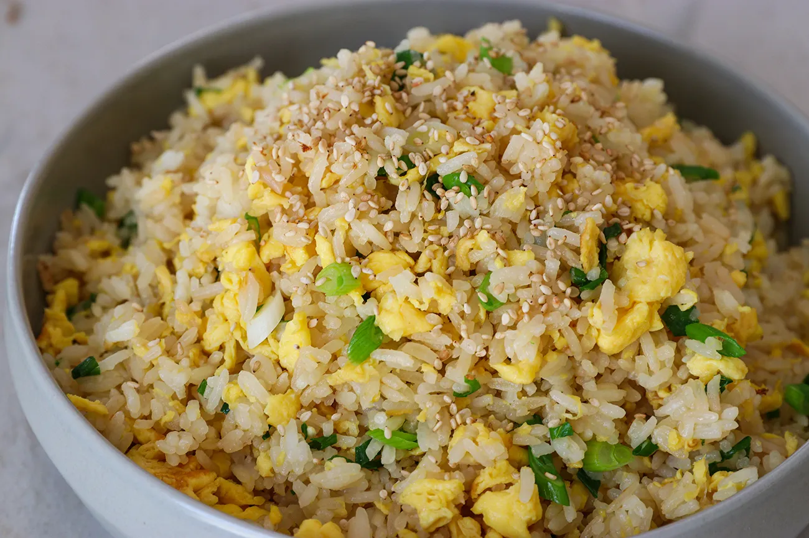

Fried Rice
Credits: Alyssa Rivers

Description
Fried rice is a Chinese dish that is commonly cooked along with eggs, veggies, and a choice of meat.
Ingredients
- 3 cups cooked rice
- 2 Tbs sesame oil
- 1 small white onion chopped
- 2-3 Tablespoons soy sauce more or less to taste
- 2 eggs lightly beaten
- 2 Tbsp chopped green onions optional
Directions
- Preheat a large skillet or wok to medium heat. Pour sesame oil in the bottom. Add white onion and peas and carrots and fry until tender.
- Slide the onion, peas and carrots to the side, and pour the beaten eggs onto the other side. Using a spatula, scramble the eggs. Once cooked, mix the eggs with the vegetable mix.
- Add the rice to the veggie and egg mixture. Pour the soy sauce on top. Stir and fry the rice and veggie mixture until heated through and combined. Add chopped green onions if desired.